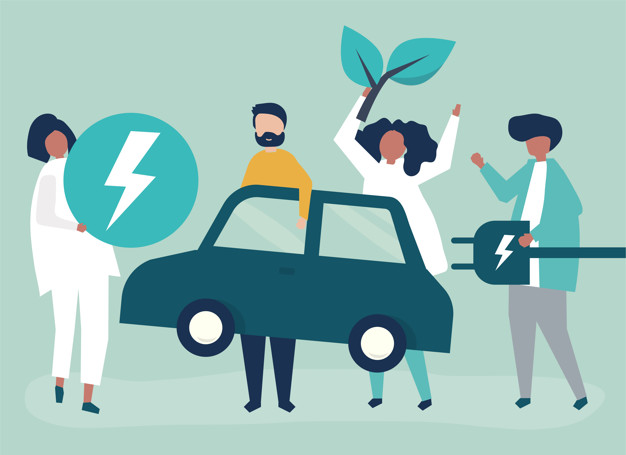

VehiAnalyticsMed APP
VehiAnalyticsMed proporcionará información detallada sobre las emisiones de gases contaminantes producidas por los vehículos, así como los efectos nocivos de la contaminación en el medio ambiente y la salud humana. Esto ayudará a los usuarios a comprender mejor el impacto de sus acciones y tomar decisiones informadas. VehiAnalyticsMed incluirá elementos de gamificación para motivar a los conductores a adoptar hábitos de conducción más ecoamigables. Los usuarios podrán ganar puntos y desbloquear logros al reducir su huella de carbono, conducir de manera más suave y utilizar formas alternativas de transporte.
Nuestros servicios
los usuarios tendrán acceso a una variedad de servicios diseñados para ayudarles a reducir la contaminación vehicular y adoptar prácticas de conducción más sostenibles.
"Reducir la contaminación vehicular requiere adoptar medidas como el uso de vehículos eléctricos, el fomento del transporte público y el desarrollo de infraestructuras para la movilidad sostenible."